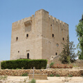

Приключения
Английского короля Ричарда I знают все. Правда, народную славу ему принесли не реальные деяния, а «львиное» прозвище, романы Вальтера Скотта и легенды о Робине Гуде. А ведь Ричард вошел в историю как личность яркая и неоднозначная: блистательный рыцарь и плохой король, военный стратег и авантюрист, романтик, поэт и «дьявол во плоти»... Наш путеводитель по следам, которые Ричард оставил на Кипре, свободен от поисков исторической правды. Мы просто перенесемся во времена, когда ради прекрасных дев затевали войны, тиранов изгоняли из их владений, а жажда приключений не давала смелым рыцарям спокойно спать.

Ричард I Львиное Сердце родился в 1157 году в Оксфорде. Он был третьим сыном в семье, а третьим сыновьям, как нас учат сказки, уготована интересная судьба... Ричард воспитывался на юге Франции при дворе матери, Алионоры Аквитанской. Он был не только чрезвычайно хорош собой — высокий, светловолосый и голубоглазый, но и очень образован, писал стихи на двух языках, был храбр и набожен.

Уинстон Черчилль
«Когда современники назвали Ричарда «Львиным Сердцем», они сделали комплимент не королю, а царю зверей».
К моменту, с которого начинается наша история, Ричард I успел поучаствовать в многочисленных битвах и восстаниях, в том числе против собственного отца, короля Генриха II, разорвать пару помолвок, получить-таки вожделенную корону, обложить страну налогами и с благословения Рима выдвинуться в Третий крестовый поход.
На помощь Святой земле Ричард I отправился со своим другом, французским королем Филиппом II Августом. Ну как другом... По крайней мере, оба они поклялись, что во время Крестового похода враждовать не будут, а все земли, завоеванные по пути к Иерусалиму, поделят поровну.
Оказалось, что передвигаться по Европе рука об руку двум королям неудобно — уж очень велики были обе армии, пришлось разделиться. В общем, Филипп II направился в Акру, а Ричард «Львиное Сердце» отстал. На его пути лежал Кипр.


Исаак из императорской семьи Комнинов был плохим парнем.
На кипрский трон он сел в 1184 году, не имея на то никаких прав: наглец просто приехал, показал какие-то фиктивные грамоты, захватил крепости и провозгласил себя императором Кипра. От притязаний Византийской империи на Кипр Исаак отбивался как мог — с помощью врага Византии Вильгельма II и при поддержке султана Саладина, от которого и хотели освободить Иерусалим крестоносцы в своем Третьем походе.
Место: гавань Лимассола
Вапреле 1191 года флот Ричарда I отплыл от берегов Сицилии, где молодой король умудрился развязать небольшую войну и занять город Мессину. 150 больших кораблей и 50 галер шли клином в сторону Сирии, где под стенами Акры дожидался подмоги король Филипп II.
Амбруаз, летописец Третьего Крестового похода: «Этот флот из лучших кораблей и людей он вел, как наседка ведет выводок за кормом, таково было его прирожденное рыцарство».
Один из кораблей вез особенно ценный груз — невесту короля, Беренгарию Наваррскую, и сестру короля, Иоанну. В один из дней разразился жесточайший шторм, а когда он стих, Ричард Львиное Сердце не досчитался 25 кораблей. Пропало и судно с Беренгарией. Пока королевский флот приходил в себя после бури на Родосе, потерянные корабли добрались до берегов Кипра и встали в гавани Лимассола. Там спасшихся, в том числе и благородных дам, пленил тогдашний правитель Кипра Исаак Комнин.

6 мая Ричард со всем своим флотом прибыл в порт Лимассола, где с облегчением увидел пропавшие корабли. Незваный гость, без всякого предупреждения, да еще и с целой армией! Исаак Комнин был недоволен и испуган. А Ричард Львиное Сердце смекнул: тут есть шанс не только вызволить невесту и сестру, но и завоевать богатый остров в двух днях пути до Палестины. Для вечно сражающихся на Ближнем Востоке крестоносцев это была настоящая находка! Короче, галеры Исаака при приближении королевского флота сдались почти без боя. Стрелки Ричарда прямо из лодок атаковали поджидавших на берегу греков. Наконец, в бой вступили рыцари под предводительством своего короля и без труда обратили вражеские силы в бегство. Так Ричард Львиное Сердце триумфально появился на Кипре.
Амбруаз: «В городе Лимассол, где начался бой, у них не осталось ни единой двери, ни единого окна, откуда бы не стреляли из лука, ни бочки, ни защелки, ни засова, ни щита, ни старой галеры или старой баржи, балки или доски или ступеньки; всё они стащили на берег, чтобы нападать на паломников. Мы были в худшем положении, ибо мы наступали с моря, нам было тесно в наших битком забитых маленьких барках, мы были отягощены колебанием волн и всем бременем нашего тяжелого оружия. Мы были пешими, и в их стране. Но воевали мы лучше».
Место: за крепостными стенами
Новая битва произошла уже на следующий день в нескольких километрах от Лимассола. У крестоносцев было много лошадей, но ведь их везли морем, подвешенными в специальных лямках — теперь им нужно было как следует размяться. К началу сражения были готовы лишь несколько десятков лошадей. Ричарда предупредили, что силы противника несоизмеримо больше. Но разве зря король носил свое прозвище? Небольшим отрядом он бросился на армию Исаака Комнина и, как говорят летописцы, сбросил его копьем на землю. Император Кипра удрал, а крестоносцы покинули поле боя с богатейшими трофеями.

В XIII веке тамплиеры существенно расширили замок и на месте базилики, где обвенчали Ричарда и Беренгарию, построили большую готическую церковь. До наших дней от той вариации замка дошла лишь квадратная капелла, в которую ведет небольшая лестница.
Место: Лимасольский замок
Двенадцатого мая в базилике Святого Георгия неподалеку от Лимассольского замка Ричард I сочетался браком с Беренгарией Наваррской. В считанные дни юная Беренгария получила руку и сердце короля, английскую корону, право на владение Гасконью и несколько поместий впридачу.
В начале XIX века Лимасольский замок стал тюрьмой. И лишь в 1950 году он был объявлен археологическим памятником.
После свадебных торжеств Исаак Комнин был вынужден присягнуть Ричарду I, но вновь сумел сбежать из королевского лагеря. Ричард, похоже, ничего другого и не ожидал и во главе эскадры кораблей отправился в рейд по прибрежным городам. Многие сдавались добровольно и даже просили английского короля взять их под защиту. Но сам Исаак и его сторонники укрылись высоко в горах, надеясь переждать нашествие крестоносцев за стенами неприступных замков. Разве мог Ричард продолжать Крестовый поход, зная, что за спиной враг?

На территории Лимасольского замка работает Кипрский музей Средневековья (Cyprus Mediaeval Museum). Коллекция любопытная, хоть с Ричардом Львиное Сердце напрямую и не связана: тут и венецианские надгробия XIV века, фигуры усопших монахов, рыцарские гербы, гипсовый слепок портала собора Святой Софии в Никосии, средневековое оружие и доспехи, монеты и предметы роскоши.
Место: замок Святого Иллариона
В Никосии Ричарда подкосила болезнь, поэтому поиском изменников занялся французский рыцарь Ги де Лузиньян. Сначала он с легкостью взял крепость Кирению и пленил дочь Исаака, а затем захватил расположенный на склонах Киренийского хребта замок Святого Иллариона или Дьё д'Амур (Замок Бога Любви). Есть романтическая версия: якобы императорская дочка и Ги были влюблены, и их часто видели в этом живописном и уединенном замке, по преданию построенном Венерой для сына Купидона.
Сегодня Замок Святого Иллариона — это одна из трех сохранившихся горных фортификаций Кипра. А в Средние века крепость славилась тем, что никто не мог взять ее штурмом.
Место: крепость Буффавенто
Преследуя Исаака по пятам, Ричард устроил осаду еще одной твердыни — замка Буффавенто, расположенного на высоте 950 метров над уровнем моря. Название крепости в переводе с итальянского означает «защита от ветров». От ветров она и правда была защищена, а вот с крестоносцами ее обитатели решили не связываться: замок сдался на милость англичан.
Место: замок Кантара
Кантара — побратим Буффавенто и замка Святого Иллариона. Их строили в горах вблизи друг от друга специально для защиты острова от врагов, даже наладили связь между тремя замками с помощью сигнальных факелов.
У Ричарда было еще одно, куда менее известное прозвище — Ричард Да-и-Нет, намекавшее, что король не очень верен своим суждениям и решениям
Когда и Буффавенто пал, Исаак Комнин, скрывавшийся в крепости Кантара, решил, что эпопею с побегами пора заканчивать. Бежать некуда, Ричард повсюду, да еще и любимая дочь в плену у захватчиков. 31 мая Исаак сдался. Бывший император попросил Ричарда не заковывать его в железные кандалы, так что для него выковали серебряные и сослали в Сирию.
Кстати, чуть позже Ричард, не имея возможности содержать остров, продал его тамплиерам за 100 тысяч безантов. Затем Кипр перекупил тот самый Ги де Лузиньян, основатель Кипрского королевства, которому было суждено просуществовать вплоть до 1489 года.
Итак, за каких-то 25 дней король Ричард Львиное Сердце практически без потерь завоевал цветущий остров в Средиземном море. Вместе с молодой женой и большей частью армии он отправился в Палестину, где его ждали новые приключения. Киприоты же были обязаны платить английской короне дань, которая шла на обеспечение нужд крестоносцев и поддержку интересов Англии в этом далеком от Туманного Альбиона уголке мира. Завоевание Кипра многие исследователи считают одним из главных достижений Третьего крестового похода — ведь в Сирии и Палестине власть крестоносцев довольно быстро ослабла, а Кипр еще три столетия оставался христианским.
Инфографика
Лондон
В английской культуре Ричард Львиное Сердце — такая же национальная гордость, как, например, Шерлок Холмс. С 1860 года каменный Ричард стоит на площади у Вестминстера, в Лондоне.
Песня как ключ
Одна из легенд напоминает о музыкальных способностях английского короля. Ричард I был в плену, и найти место его заточения никто не мог. Однажды придворный трубадур Блондель де Нель шел и напевал песню, когда-то сочиненную вместе с королем. И вдруг из окна башни кто-то начал подпевать... Так Ричарда Львиное Сердце удалось обнаружить и вызволить!
Интернет-издание о культурной жизни, развлечениях и кухне Кипра для путешественников и жителей острова
Перепечатка и использование любых материалов только с разрешения редакции: editor@cyprustrav.ru
Подпишись на события Кипра
Каждую неделю мы знакомим вас с интересными событиями из жизни острова.
Коротко, информативно, познавательно!
Коротко, информативно, познавательно!
Подписывайтесь на самые свежие и интересные обзоры о жизни и досуге Кипра
Прогноз погоды предоставлен
OpenWeatherMap
OpenWeatherMap